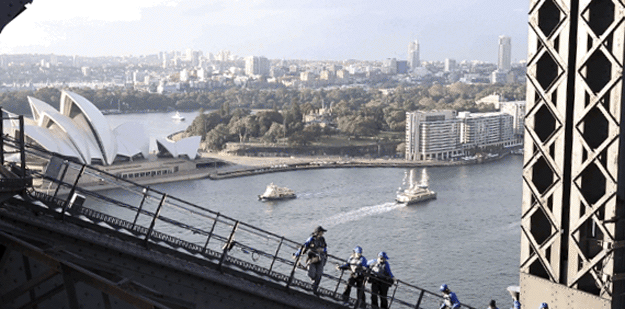

Climb the Sydney's Harbour Bridge to experience views from a height of 440 feet abave sea level. Climbs to the summit are limited to 14 participants to ensure a small group. Choose a half-day BridgeClimb with a guide in the morning, or climb at dawn, twilight, or night.
